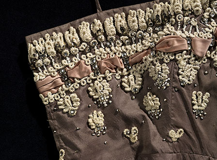
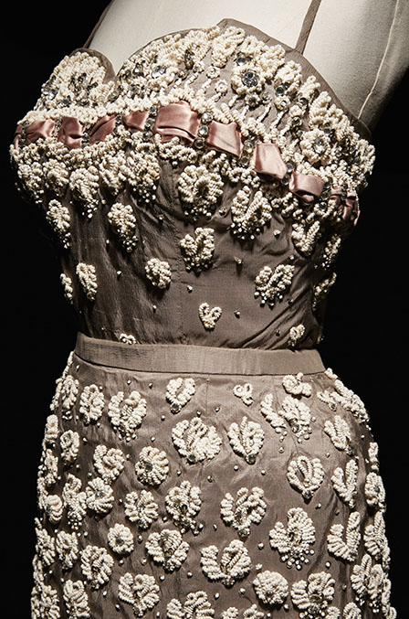
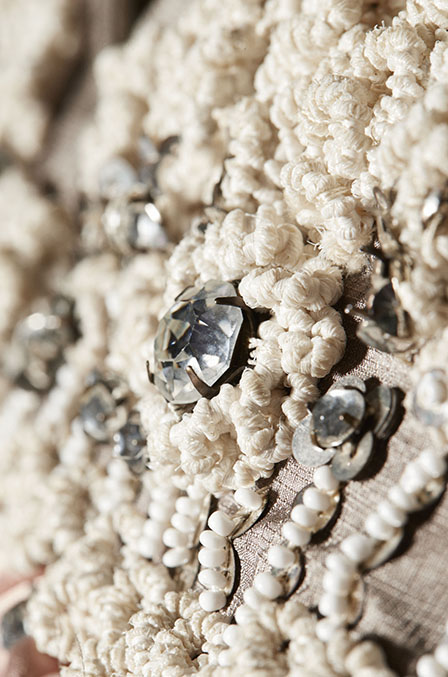
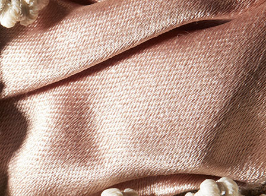
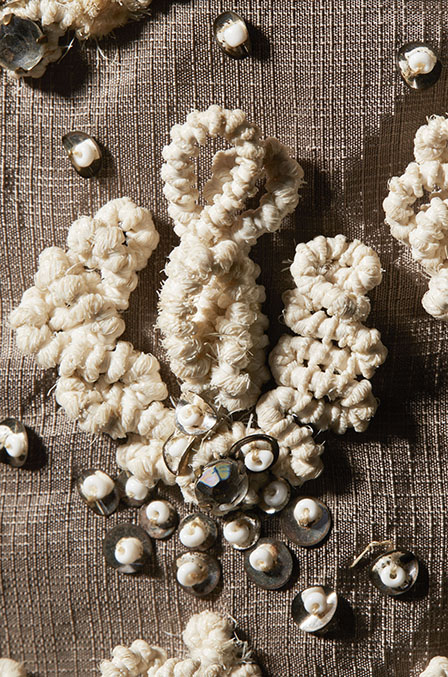

Press Sketch
Dior Héritage Collection, Paris



Maison Rébé embroidery:
- 3 sizes of Swarovski® crystals in antique mounts
- 2 sizes of sequins
- 1 white round seed beads
- Twisted plastic with cotton core thread worked in various ways
- Silk satin ribbon
* Photos Laziz Hamani
Left: Silk shantung by Jean Page in marron glacé (chestnut) brown is embroidered by Maison Rébé.
 *
*

*



Photos Laziz Hamani



